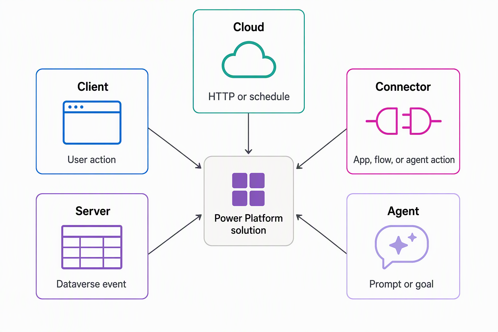

الإصدار التجريبي (Pilot Preview) — موسوعة مطوّر Microsoft Power Platform و Dynamics 365 لشهادة AB-400
عينة معمارية وتطبيقية شاملة (4 وحدات: معمارية المنصة + كود C# Plug-ins + اختبار تقييمي + معمل تطبيقي كامل مع الكود المرجعي الكامل وشرحه)
رسم خريطة مواقع تشغيل كود التوسيع وكيفية بدء تنفيذه (Extension Runtimes & Triggers)
تستعرض وحدة المقدمة سيناريو تجهيز المعدات (Equipment-provisioning scenario) والقائمة الكاملة لخيارات التوسيع البرمجي التي يقارن بينها هذا الموديول. وقبل المقارنة بين التقنيات المختلفة، ينبغي أولاً بناء نموذج ذهني واضح لبيئة استضافة وتنفيذ الكود ومُحفّزات تشغيله. وتبني الوحدات اللاحقة على هذه الخريطة المعمارية عند إجراء المقارنات التفصيلية بين الخيارات المختلفة.
بيئات التشغيل الخمس للتوسيع: Client وServer وCloud وConnector وAgent
يعيش كل جزء من منطق التوسيع البرمجي (Extension logic) داخل واحدة من خمس بيئات تشغيل أساسية (Runtimes): العميل (Client)، أو الخادم (Server)، أو السحابة (Cloud)، أو الموصل (Connector)، أو وكيل الذكاء الاصطناعي (Agent). وتتميز كل بيئة تشغيل بخصائص استضافة محددة، وقيود تشغيلية، ودور معماري مستقل. إن إدراك البيئة التي ينتمي إليها منطق برمجي معين هو القرار الهندسي الأول الذي تتخذه، وذلك قبل وقت طويل من اختيار تقنية بعينها.

تأمل نظام تجهيز المعدات المطروح في المقدمة. يملأ الموظف طلباً داخل تطبيق، لذا يعمل جزء من المنطق البرمجي هناك مباشرة داخل التطبيق. وتقوم قاعدة بيانات Dataverse بتخزين وفرض القواعد الخاصة بالطلبات، مما يعني أن منطقاً آخر يعمل على الخادم (Server) كلما تم إنشاء سجل طلب، بغض النظر عن التطبيق أو العملية التي أنشأت ذلك السجل.
وتقوم خدمة خارجية بتتبع الأجهزة المتاحة فعلياً في المخزون، ولذلك فإن المنطق الذي يستدعي تلك الخدمة يعمل في مكان ما خارج Dataverse بالكامل. كما يقوم منسق الاعتمادات بمراجعة الطلبات والموافقة عليها، ويمكن أن تُدار محادثة الموافقة تلك نفسها بواسطة وكيل ذكاء اصطناعي (AI Agent) يحلل الطلب منطقياً. يضع الجدول التالي كل بيئة تشغيل في مكانها الصحيح على الخريطة المعمارية ويربطها بجزء محدد من هذا السيناريو.
| بيئة التشغيل (Runtime) | أين يتم التنفيذ الفعلي (Where it executes) | ما الذي يبدأ التشغيل (What initiates it) | مثال تطبيقي من السيناريو (Example from the scenario) |
|---|---|---|---|
| Client | داخل المتصفح أو بيئة تشغيل التطبيق، على جهاز المستخدم مباشرة | إجراء من المستخدم: فتح نموذج (Form)، أو الكتابة داخل حقل، أو النقر على زر | التحقق من إدخال الموظف لمعرّف الجهاز بالصيغة الصحيحة أثناء تعبئة الطلب |
| Server | على خادم Dataverse، وضمن نفس المعاملة (Transaction) الخاصة بعملية البيانات | حدث في Dataverse: انطلاق رسالة (Message) مثل Create أو Update أو Delete على صف في جدول (Table row) | فرض قواعد الأهلية والاستحقاق في كل مرة ينشئ فيها شخص أو نظام سجل طلب، بغض النظر عما إذا كان الطلب قادماً من تطبيق أو Cloud Flow أو واجهة API |
| Cloud | على موارد حوسبة أو خدمات سحابية خارج Dataverse | استدعاء HTTP أو مشغل مجدول زمنياً (Scheduled trigger) | فحص التوافر الفوري للأجهزة من خدمة خارجية، سواء وفق جدول زمني أو في لحظة إرسال الطلب |
| Connector | عند الجسر الرابط بين Power Platform والنظام الخارجي | إجراء (Action) أو طلب يتم تمريره عبر الموصل بواسطة تطبيق أو Cloud Flow أو وكيل Agent | كشف وإتاحة عمليات خدمة التوافر الخارجية بحيث يتمكن Cloud Flow أو Agent من استدعائها بأمان |
| Agent | داخل بيئة تشغيل مدعومة بالذكاء الاصطناعي تحلل هدفاً أو محادثة أو مجموعة تعليمات | مطالبة حوارية (Prompt)، أو هدف محدد، أو حدث يراقبه الوكيل | قيادة الطلب عبر محادثة اعتماد تفاعلية مع المنسق، أو مراقبة الطلبات المعلقة وتنبيه المنسق تلقائياً |
المشغلات (Triggers): ما الذي يبدأ عمل كل بيئة تشغيل
إن السؤال عن المكان الذي يعيش فيه الكود والسؤال عما يبدأ تشغيله هما سؤالان منفصلان تماماً، والخلط بينهما يُعد مصدراً شائعاً للارتباك عند مقارنة خيارات التوسيع لأول مرة. فبيئة التشغيل (Runtime) تخبرك بالمكان الفيزيائي الذي يُنفَّذ فيه المنطق البرمجي، بينما يخبرك المشغل (Trigger) بالإشارة التي تطلق هذا التنفيذ، وتبدو تلك الإشارة مختلفة كلياً من بيئة تشغيل إلى أخرى.
فمع منطق العميل (Client logic)، يوجد دائماً شخص بشري خلف المشغل: نقرة ماوس، أو ضغطة مفتاح، أو فتح نموذج (Form). أما مع منطق الخادم (Server logic)، فلا يكون المشغل شخصاً بشكل مباشر أبداً؛ بل هو رسالة (Message) تطلقها المنصة كلما حدثت عملية بيانات، سواء تسبب فيها مستخدم بشري، أو تدفق سحابي (Cloud Flow)، أو نظام خارجي آخر.
وهذا التمييز جوهري جداً في سيناريو العمل؛ فقاعدة التحقق من الأهلية التي تعمل فقط عندما يرسل الموظف طلباً عبر واجهة التطبيق ستفوّت حتماً أي طلبات يتم إنشاؤها بأي طريقة أخرى. أما وضع تلك القاعدة على الخادم (Server) بحيث تنطلق بواسطة الحدث ذاته بدلاً من واجهة التطبيق، فيضمن اتساق تطبيق القاعدة بصرامة بغض النظر عن الكيفية التي أُنشئ بها الطلب.
وتقع مشغلات السحابة (Cloud) والموصلات (Connector) في منطقة وسطى بينهما؛ فالعملية السحابية تستجيب لاستدعاء HTTP أو تنطلق وفق جدول زمني، مما يعني أن الفحص الليلي المجدول لتوافر الأجهزة والفحص الفوري عند الطلب الناتج عن إرسال طلب جديد يمكن أن يتواجدا معاً كنفس النوع من المنطق السحابي مع ربط كل منهما بمشغل مختلف.
أما الموصل (Connector) فلا يقوم بتشغيل أي شيء من تلقاء نفسه، بل يكتفي بإتاحة العمليات البرمجية لكي يقرر مكون آخر — مثل Cloud Flow أو تطبيق أو Agent — استدعاءها عند الحاجة.
ويقدم منطق الوكيل (Agent logic) نوعاً مختلفاً تماماً من المشغلات؛ فبدلاً من الاستجابة لحدث منفرد ومحدد، يستجيب الوكيل لهدف (Goal) أو محادثة، ويمكنه مواصلة التفكير والاستنتاج عبر خطوات متعددة، كما يحدث عندما يوجه المنسق خطوة بخطوة خلال عملية اعتماد الطلب بدلاً من العمل لمرة واحدة والتوقف.
مصطلحات جانب الخادم (Server-side vocabulary): الرسالة والخدمة وإطار عمل الأحداث
يأتي المنطق البرمجي على جانب الخادم في Dataverse بمصطلحاته المعمارية الخاصة. ويساعدك التعرف على هذه المصطلحات الآن على امتلاك الأساس المتين الذي تحتاجه عندما تتعمق الوحدات اللاحقة في هذا الموديول في بناء التوسيعات الفعلية. أنت لا تبني شيئاً بهذه المصطلحات في هذه اللحظة، بل تضعها في مكانها الصحيح على الخريطة الذهنية.
تُعرَّف كل عملية بيانات في Dataverse — سواء كانت عملية إنشاء (Create)، أو تحديث (Update)، أو عملية أعمال مخصصة — كرسالة مسماة (Message). وتكتمل هذه المنظومة الاصطلاحية بخمسة مصطلحات أساسية أخرى:
- Organization service: تُعرّف هذه الرسائل والعمليات التي تدعمها المنصة برمجياً.
- Dataverse Web API: تكشف وتتيح نفس دليل العمليات هذا عبر بروتوكول HTTP في صورة دوال وإجراءات REST قياسية، مما يتيح لك استدعاء نفس العمليات المتطابقة التي تُعرّفها خدمة المؤسسة (Organization service) من أي لغة برمجة تقريباً.
- Event framework: يكتشف لحظة انطلاق أي رسالة من هذه الرسائل ويتيح لك تسجيل منطق برمجي مخصص للاستجابة لها.
- Plug-in: هو الكود البرمجي على جانب الخادم الذي تقوم بتسجيله للاستجابة لحدث معين من خلال إطار عمل الأحداث (Event framework).
- Custom API: تتيح لك تعريف عملية مسماة جديدة كلياً تتجاوز العمليات المدمجة التي يأتي بها Dataverse افتراضياً، بحيث يتمكن أي منطق برمجي آخر من استدعائها بنفس الطريقة التي يستدعي بها أي رسالة مدمجة.
معاً، تصف هذه المكونات الخمسة كيف يرتبط منطق جانب الخادم بالمنصة معمارياً، وليس التفاصيل الكودية لكيفية كتابة كل مكون منها.
سؤال توجيهي للتفكير (Guiding question): فكر في عملية أعمال تدعمها في عملك أو في نظام تعرفه جيداً؛ أي جزء من منطقها ينتمي إلى جانب العميل (Client)، وأي جزء ينتمي إلى جانب الخادم (Server)، وأي جزء يعتمد على خدمة خارجية أو قرار مدعوم بالذكاء الاصطناعي؟ حاول توزيع كل جزء على خريطة بيئات التشغيل الخمس قبل الانتقال إلى الوحدة التالية.
ومع اكتمال هذه الخريطة المعمارية، أصبحت مستعداً لفحص الخيارات التقنية المحددة داخل كل بيئة تشغيل. تركز الوحدة التالية في هذا الموديول على بيئة تشغيل العميل والتطبيق، حيث تقارن بين Client scripts، ومكونات PCF، وتطبيقات الكود (Code Apps)، والصفحات التوليدية (Generative pages) في ضوء النموذج الذهني الذي بنيته للتو.
تطوير إضافة برمجية (Plug-in) تستخدم سياق التنفيذ (Execution Context)
أوضحت الوحدة 2 أن فحص رصيد الاستحقاق لشركة Contoso يجب تنفيذه في مرحلة PreValidation، وبيّنت أفضلية هذه المرحلة مقارنة بمرحلة PreOperation عند إجراء فحوصات تهدف فقط إلى رفض العملية مبكراً بأقل استهلاك لموارد النظام. وتوضح هذه الوحدة كيفية تحويل هذا القرار المعماري إلى فئة C# تطبيقية، وقراءة بيانات سجل الطلب (Request record) عبر سياق التنفيذ (ExecutionContext / IPluginExecutionContext).
تنفيذ الواجهة IPlugin لتشغيل منطقك داخل خط أنابيب الأحداث (Pipeline)
تقوم كل فئة Plug-in تسجلها في Dataverse بتنفيذ الواجهة البرمجية IPlugin. وتُعرّف هذه الواجهة دالة واحدة فقط هي Execute(IServiceProvider serviceProvider)، حيث يستدعي Dataverse هذه الدالة تلقائياً كلما انطلقت خطوة مسجلة (Registered step) مرتبطة بفئتك البرمجية. وكل ما يقوم به الـ Plug-in الخاص بك يحدث بالكامل داخل هذه الدالة الواحدة.
فيما يلي فئة برمجية مبسطة تطابق فحص رصيد الاستحقاق من الوحدة رقم 2، ومسجلة كخطوة في مرحلة PreValidation على رسالة الإنشاء (Create) الخاصة بجدول الطلبات (Request table):
public class ValidateRequestAllowance : IPlugin
{
public void Execute(IServiceProvider serviceProvider)
{
IPluginExecutionContext context = (IPluginExecutionContext)
serviceProvider.GetService(typeof(IPluginExecutionContext));
Entity request = (Entity)context.InputParameters["Target"];
if (request.Contains("cont_remainingallowance") &&
request.GetAttributeValue<Money>("cont_remainingallowance").Value <= 0)
{
throw new InvalidPluginExecutionException(
"This employee has no remaining allowance for a new request.");
}
}
}يُعد المعامل serviceProvider هو البوابة التي تصل من خلالها الدالة Execute إلى كل ما تحتاجه أثناء التشغيل: سياق التنفيذ (IPluginExecutionContext)، وخدمة التتبع التشخيصي (ITracingService)، وخدمة المؤسسة (IOrganizationService) التي ستستكشفها في الوحدة التالية. ويتيح استخراج كائن الكيان (Entity) الخاص بالطلب عبر التحويل النوعي من InputParameters["Target"] وصولاً مباشراً للـ Plug-in إلى الصف (Row) الفعلي الذي يحاول الموظف حفظه، وذلك قبل أن تصل عملية الحفظ إلى قاعدة البيانات.
الحفاظ على فئة الـ Plug-in عديمة الحالة (Stateless)
يقوم Dataverse بتخزين نسخة واحدة فقط (Single instance) من فئة الـ Plug-in في الذاكرة المؤقتة (Cache) ويعيد استخدامها عبر العديد من الاستدعاءات المتتالية لمختلف المستخدمين والطلبات، نظراً لأن إنشاء نسخة جديدة في كل مرة يستهلك موارد الأداء. وهذا السلوك في التخزين المؤقت هو السبب الجوهري الذي يفرض أن تظل فئة الـ Plug-in عديمة الحالة (Stateless): إذ إن أية بيانات تُحفظ في حقل أو خاصية على مستوى الفئة ستظل قائمة في الذاكرة وتؤثر في كل استدعاء لاحق يعيد استخدام نفس النسخة المخبأة؛
مما قد يؤدي إلى تسريب بيانات طلب موظف إلى سياق تنفيذ موظف آخر، أو استبدال بياناتها أثناء المعالجة بفعل استدعاء متزامن (Concurrent call). ومن الناحية العملية، يعني ذلك الالتزام بالقواعد التالية:
- احتفظ بالكائنات الخاصة بالطلب داخل الدالة
Executeفقط. ينتمي كل من سياق التنفيذ (Context)، ومرجع خدمة المؤسسة (Organization service)، وخدمة التتبع (Tracing service)، وأي بيانات صف خاصة بالطلب إلى النطاق المحلي داخل Execute، ولا يجوز أبداً تعريفها كحقول على مستوى الفئة. - الثوابت على مستوى الفئة والدوال المساعدة عديمة الحالة آمنة تماماً. أي عنصر لا يحتفظ بحالة مرتبطة بطلب معين لا بأس من إبقائه على مستوى الفئة، لأنه لا يتغير بين الاستدعاءات المتتالية.
- لا تقم بتخزين السياق أو الخدمة أو التتبع أو بيانات الصفوف في حقول الفئة. إن التعامل مع الدالة
Executeبوصفها المكان الوحيد الذي تعيش فيه الحالة المؤقتة يضمن بقاء إضافة Contoso البرمجية آمنة تماماً عند إعادة الاستخدام تحت ضغط التشغيل الفعلي في بيئة الإنتاج.
الاختيار بين تنفيذ IPlugin مباشرة أو البناء فوق الفئة PluginBase
إن كتابة فئة برمجية تنفذ الواجهة IPlugin مباشرة، كما يفعل المثال السابق، يعمل بكفاءة مع أي Plug-in. كما يوفر Dataverse فئة مجردة (Abstract class) باسم PluginBase يتم توليدها تلقائياً لك بواسطة إضافة أدوات Power Platform لبرنامج Visual Studio أو عبر أمر pac plugin init في أداة Power Platform CLI. وتنفذ الفئة PluginBase الواجهة IPlugin وتجهز مسبقاً سياق التنفيذ والخدمات الشائعة، بحيث تبدأ دالة Execute التي تعيد تعريفها (Override)، والسياق والخدمات جاهزة للاستخدام المباشر بدلاً من استخراجها يدوياً في كل مرة.
تُعد الفئة PluginBase وسيلة راحة وتسهيل للمطور، وليست متطلباً إجبارياً؛ فمن المفيد وضعها في الاعتبار أثناء كتابة أولى إضافاتك البرمجية لأنها تزيل الكود التأسيسي المتكرر، غير أن الفئة التي تنفذ IPlugin مباشرة تتصرف بشكل متطابق تماماً بمجرد تسجيلها على الخادم. ويمكن لمطوري Contoso المزج بين الأسلوبين داخل نفس الحل (Solution) دون أي تعارض.
قراءة البيانات التي يحتاجها الـ Plug-in من سياق التنفيذ (Execution Context)
يحمل سياق التنفيذ كل المعلومات التي يحتاج الـ Plug-in إلى معرفتها حول العملية الجارية التي يعمل بداخلها. والخصائص التي ستستخدمها في أغلب الأحيان هي:
| الخاصية (Property) | ماذا تحتوي (What it holds) | كيف يستخدمها الـ Plug-in في شركة Contoso |
|---|---|---|
InputParameters / OutputParameters |
بيانات الطلب والاستجابة للعملية الجارية في صورة أزواج مفاتيح وقيم (Key/value pairs) | قراءة كيان الطلب (Entity) من InputParameters["Target"] قبل اكتمال عملية الحفظ |
SharedVariables |
بيانات تمررها خطوة Plug-in إلى خطوة لاحقة ضمن نفس تنفيذ خط الأنابيب؛ وبالنسبة لقيمة تم ضبطها في مرحلة PreValidation على رسائل Create أو Update أو Delete، تقرؤها الخطوة اللاحقة من ParentContext.SharedVariables |
تتيح لخطوة في PreValidation وضع علامة أو قيمة تسترجعها خطوة في PostOperation على نفس الطلب عبر ParentContext.SharedVariables وتتصرف بناءً عليها |
PreEntityImages / PostEntityImages |
لقطات (Snapshots) لحالة الصف قبل تنفيذ العملية وبعدها | تحمل البيانات التي تستخدمها الوحدة رقم 4 لمقارنة قيم سجل الطلب قبل التحديث وبعده |
Stage, MessageName, PrimaryEntityName |
المرحلة الجارية حالياً والرسالة والجدول اللذان أطلقا التنفيذ | تتيح لفئة برمجية واحدة مسجلة على عدة خطوات التمييز بينها أثناء التشغيل |
Depth |
عمق التنفيذ الحالي في مكدس الاستدعاءات (Call stack) | يساعدك على رصد حالات إعادة الدخول المتكررة (Re-entry) عندما يؤدي تحديث داخل Plug-in إلى إطلاق معالجات إضافية |
ParentContext |
تفاصيل حول العملية الخارجية الأب، إذا كان Plug-in آخر أو مسار عمل قد أطلق العملية الحالية | يوضح ما إذا كان التغيير على سجل الطلب قد تم تشغيله نتيجة إجراء قام به Plug-in آخر مسبقاً |
جميع هذه الخصائص هي خصائص للقراءة فقط (Read-only) على كائن السياق نفسه، ولكن المجموعات InputParameters وOutputParameters وSharedVariables هي مجموعات قابلة للتعديل (Mutable collections). إن تعديل العناصر الموجودة بداخل هذه المجموعات — بدلاً من محاولة إعادة تعيين الخاصية نفسها — هو الطريقة التي يغير بها الـ Plug-in سلوك العملية في المراحل التالية. كما تحمل PreEntityImages وPostEntityImages بيانات فعلية بمجرد تسجيلها على الخطوة (Pre-image وPost-image)، وتغطي الوحدة التالية بالتفصيل كيفية تسجيل هذه الصور والتعامل معها برمجياً.
تأمل ومراجعة (Reflect): بناءً على ما قرأته، لماذا لا ينبغي لفئة الـ Plug-in في شركة Contoso تخزين مرجع خدمة المؤسسة (Organization service) في حقل على مستوى الفئة؟ وما هي خاصية السياق التي ستفحصها أولاً للتأكد من قيمة الحالة الحالية لسجل الطلب قبل متابعة التنفيذ؟
الحماية من الحلقات اللانهائية باستخدام خاصية Depth
توجد الخاصية Depth لأن الـ Plug-in يمكن أن يطلق عملية بيانات أخرى تؤدي — بشكل مباشر أو غير مباشر — إلى تشغيل نفس الـ Plug-in مرة أخرى. ويقوم Dataverse بزيادة قيمة Depth بمقدار واحد في كل مرة يحدث فيها ذلك، ثم يوقف التنفيذ تلقائياً بمجرد تجاوز الحد الأقصى الداخلي المسموح به، مما يمنع أي حلقة تكرارية خارجة عن السيطرة من استهلاك موارد الخادم إلى ما لا نهاية. وينبغي لك التعامل مع Depth كشبكة أمان تديرها المنصة تلقائياً، وليس كقيمة يعتمد عليها منطق الأعمال الخاص بك، إذ يمكن أن يتغير الرقم الفعلي لأسباب تقع خارج سيطرة الـ Plug-in مباشرة.
إعادة استخدام المنطق البرمجي عبر الخطوات باستخدام بيانات الإعداد (Configuration Data)
تعالج آلية مستقلة أخرى مشكلة عملية شائعة: كيفية إعادة استخدام نفس فئة الـ Plug-in المترجمة (Compiled class) عبر عدة خطوات تحتاج كل منها إلى إعدادات مختلفة قليلاً. يمكن لفئة الـ Plug-in تعريف معاملات نصية (String parameters) في دالة البناء (Constructor) لكل من الإعدادات غير المؤمنة (unsecure) والإعدادات المؤمنة (secure)، حيث تقوم بتمرير القيم الخاصة بكل منهما وقت تسجيل الخطوة:
- بيانات الإعداد غير المؤمنة (Unsecure configuration data): تكون مرئية لأي مستخدم يمتلك صلاحية عرض تفاصيل تسجيل الخطوة في البيئة.
- بيانات الإعداد المؤمنة (Secure configuration data): تُخزن بشكل مستقل وتكون متاحة للمسؤولين (Administrators) فقط.
ويمكن لشركة Contoso توظيف هذه الآلية لتسجيل نفس فئة فحص الاستحقاق على عدة خطوات مختلفة، مع تمرير حد مالي مختلف كبيانات إعداد لكل خطوة، مما يغني عن كتابة فئات برمجية شبه مكررة لكل حد مالي.
ومع اكتمال كتابة الفئة البرمجية وربط خصائص سياق التنفيذ باحتياجات الـ Plug-in في Contoso، تبني الوحدة التالية فوق هذا الأساس؛ حيث توضح كيف تنقل الصور القبلية (Pre-image) والصور البعدية (Post-image) قيم الصف قبل التحديث وبعده، وكيف تتيح لك خدمة المؤسسة (Organization service) تنفيذ عمليات بيانات إضافية كجزء من نفس المعاملة (Transaction).
تعرف على المزيد حول كتابة إضافة Plug-in برمجية وفهم سياق تنفيذ البيانات (Execution Context).
تقييم الموديول (Module Assessment)
اختبر معلوماتك (Check your knowledge)
Answer Key & Verification Status):(ملاحظة منهجية: واجهة Markdown الثابتة في Microsoft Learn تعرض نص الأسئلة والاختيارات فقط دون حقل الإجابة الصحيحة؛ وقد تم التحقق من كل إجابة أدناه بمقابلتها نصياً مع الفقرات الرسمية في وحدات نفس الموديول
learn.wwl.implement-dataverse-plug-ins).- السؤال 1 — الإجابة:
PreValidation | حالة التحقق: SOURCE_VERIFIED (موثق نصياً في الوحدة 2: "If that check runs in PreValidation and throws an exception, Dataverse cancels the Request before any transaction exists, which is inexpensive and immediate").- السؤال 2 — الإجابة:
Dataverse caches and reuses a single instance of the plug-in class across many invocations, so a stored field can leak data between unrelated requests. | حالة التحقق: SOURCE_VERIFIED (موثق نصياً في الوحدة 3، قسم Keep your plug-in class stateless: "Dataverse caches a single instance of your plug-in class and reuses it across many invocations... one employee's Request data could leak into another employee's execution").- السؤال 3 — الإجابة:
Register a pre-image and a post-image on the step, and compare the two aliases inside the plug-in. | حالة التحقق: SOURCE_VERIFIED (موثق نصياً في الوحدة 4، قسم Compare pre-image and post-image values).- السؤال 4 — الإجابة:
Obtain an IOrganizationService instance from the IOrganizationServiceFactory and call its Update method. | حالة التحقق: SOURCE_VERIFIED (موثق نصياً في الوحدة 4، قسم Use the Organization service inside a plug-in).- السؤال 5 — الإجابة:
Sandbox isolation mode with the assembly stored in the database. | حالة التحقق: SOURCE_VERIFIED (موثق نصياً في الوحدة 5 وفي خطوة التسجيل رقم 4 في المعمل العملي Lab 01: "Confirm Isolation Mode is Sandbox and Location is Database").بناء وتسجيل إضافة برمجية (Plug-in) للتحقق من أهلية المعدات
يُمثّل حل (Equipment Provisioning) تطبيقاً على منصة Microsoft Dataverse يُمكّن الموظفين من طلب معدات بديلة، ويسمح للمنسقين بمراجعة تلك الطلبات واعتمادها. ولا يُسمح باستبدال أي جهاز إلا إذا كان قد مضى على إصدار الجهاز المراد استبداله 24 شهراً على الأقل، أو تم تمييزه بأنه تالف وغير قابل للإصلاح — ولكن في الوضع الحالي يتم فرض هذه القاعدة فقط بواسطة سكربت على نموذج الطلب (Form script)، مما يعني أنه يمكن تجاوزها بسهولة بواسطة أي شخص يقوم بتحديث الطلب مباشرة عبر واجهة Dataverse Web API بدلاً من واجهة النموذج.
في هذا التمرين العملي، ستكتب وتسجل إضافة برمجية (Dataverse Plug-in) تفرض نفس القاعدة على الخادم (Server) حيث لا يمكن تجاوزها أبداً. ستستخدم حزمة تطوير البرمجيات Dataverse SDK for .NET، وصورة قبلية (Pre-image) لقراءة الحالة السابقة للطلب، وخدمة المؤسسة (Organization service) للبحث عن الجهاز المراد استبداله. ثم ستقوم بتسجيل الـ Plug-in باستخدام أداة Plugin Registration Tool، وتثبت عملياً أنه يغلق الثغرة التي تركها الفحص المقتصر على النموذج مفتوحة. وأخيراً، ستقوم بفهرسة الواجهة البرمجية المخصصة (Custom API) الخاصة بالقاعدة كحدث أعمال (Business event) في Dataverse لكي تتمكن مسارات الأتمتة الأخرى من اكتشافه والتفاعل معه.
في هذا التمرين، ستقوم بما يلي:
- محاولة اعتماد طلب غير مؤهل مباشرة عبر واجهة Dataverse Web API متجاوزاً فحص جانب العميل في النموذج
- كتابة Plug-in يقرأ صورة قبلية (Pre-image) ويستعلم من Dataverse عبر Organization service لفرض قاعدة الأهلية
- تسجيل الـ Plug-in باستخدام أداة Plugin Registration Tool
- التأكد من أن الـ Plug-in يمنع نفس محاولة التجاوز التي نجحت سابقاً — مع استمرار السماح بالحالات الاستثنائية المشروعة
- فهرسة الـ Custom API الخاصة بقاعدة الأهلية كحدث أعمال (Dataverse business event)
يستغرق إكمال هذا التمرين حوالي 35 دقيقة تقريباً.
المتطلبات الأساسية (Prerequisites)
لإكمال هذا التمرين، تحتاج إلى:
- جهاز كمبيوتر يعمل بنظام Windows؛ إذ إن Visual Studio وأداة Plugin Registration Tool هما تطبيقا سطح مكتب يعملان على Windows فقط، ولا يوجد بديل عابر للمنصات لهذا التمرين.
- برنامج Visual Studio على الرابط
https://visualstudio.microsoft.com/، إصدار 2022 أو أحدث، مع توفر قالب المشروع Class Library (.NET Framework) (الذي يُثبَّت ضمن حزمة العمل .NET desktop development). - حزمة الاستهداف .NET Framework 4.8 targeting pack؛ وإذا لم تكن مثبتة مسبقاً، فسيطالبك Visual Studio بتثبيتها في أول مرة تبني فيها مشروعاً يستهدف هذا الإصدار.
- أداة سطر الأوامر Power Platform CLI على الرابط
https://learn.microsoft.com/power-platform/developer/cli/introduction، وتُستخدم لتشغيل أداة Plugin Registration Tool. - أداة سطر الأوامر Azure CLI على الرابط
https://learn.microsoft.com/cli/azure/install-azure-cli، وتُستخدم في هذا التمرين للحصول على رمز وصول (Access token) لإجراء استدعاء مباشر لواجهة Web API. - بيئة Dataverse تمتلك فيها دور الأمان (Security Role) إما System Administrator أو System Customizer؛ ويمتلك مالك البيئة التطويرية هذا الدور افتراضياً.
Note: إذا كان مساعد GitHub Copilot متاحاً لديك داخل Visual Studio، فلا تتردد في استخدامه للمساعدة في صياغة أو مراجعة كود الـ Plug-in في هذا التمرين — ولكنه غير إلزامي، فجميع مقاطع الكود التي تحتاجها متوفرة بالكامل هنا.
قبل أن تبدأ (Before you start)
يفترض هذا التمرين أن لديك بالفعل بيئة تطوير Dataverse مثبتاً عليها الحل الأساسي Equipment Provisioning (base)، كما هو موضح في دليل الإعداد Set up your lab environment. إذا لم تكن قد أكملت ذلك الإعداد بعد، فقم بإنجازه الآن قبل المتابعة.
- سجّل الدخول إلى بوابة صانع Power Apps (Power Apps maker portal) على الرابط
https://make.powerapps.com، وتأكد من أن محدد البيئة يعرض البيئة التي تستخدمها لهذه التمارين. - اختر Solutions، وتأكد من ظهور الحل Equipment Provisioning (base) في القائمة. إذا لم يكن ظاهراً، فاتبع خطوات الاستيراد الواردة في Set up your lab environment، ثم عد إلى هنا.
- قم بتنزيل ملف الحل المدار EquipmentProvisioningLab01_managed.zip من الرابط
https://raw.githubusercontent.com/MicrosoftLearning/AB-400-microsoft-power-platform-developer/main/Allfiles/01-equipment-validation-plugin/EquipmentProvisioningLab01_managed.zip. يضيف هذا الحل نموذج Request intake إلى جدول الطلبات (Request table) محتوياً على فحص الأهلية في جانب العميل الذي ستقوم بتجاوزه في المهمة التالية. - في صفحة Solutions، اختر Import solution، ثم اختر Browse، وحدد الملف الذي قمت بتنزيله، واضغط على Next ثم Import. انتظر حتى يكتمل الاستيراد.
- افتح تطبيق Equipment Provisioning واختر Requests من خريطة الموقع (Site map).
- في شريط الأوامر (Command Bar) الخاص بطريقة العرض Active Requests، اختر الزر Reset lab data. انتظر حتى ينتهي، وراجع الملخص في نافذة الحوار Lab data reset، ثم أغلق النافذة واختر Refresh.
ينبغي أن ترى الطلبات من REQ-SEED-001 إلى REQ-SEED-004 مدرجة كطلبات مفتوحة، وكل منها يحمل الحالة الموضحة في ملخص البيانات.
محاولة اعتماد طلب غير مؤهل (Try to approve an ineligible request)
قبل أن تكتب أي سطر كود، شاهد بنفسك الثغرة المعمارية التي توشك على إغلاقها. يطلب السجل REQ-SEED-001 استبدال جهاز كمبيوتر محمول تم إصداره منذ 8 أشهر فقط وليس تالفاً — وبالتالي لا ينبغي أن يكون مؤهلاً للاستبدال قبل مرور 16 شهراً أخرى. ويمنع فحص جانب العميل على نموذج الطلب المنسقَ من اعتماده عن طريق الخطأ، ولكن ذلك الفحص يعمل داخل المتصفح فقط.
- في تطبيق Equipment Provisioning، افتح السجل
REQ-SEED-001. - اختر محدد النموذج (Form selector) في أعلى السجل (الذي يعرض اسم النموذج الحالي)، وقم بالتبديل إلى النموذج Request intake.
- اضبط حقل Request status على القيمة Approved، ثم احفظ السجل.
- اختر أيقونة الترس (Settings) في الزاوية العلوية اليمنى من بوابة الصانع، ثم اختر Developer resources. انسخ قيمة Web API endpoint — حيث ستستخدمها كعنوان URL للبيئة في بقية خطوات هذا التمرين.
- قم بتنزيل السكربت Approve-RequestViaWebApi.ps1 من الرابط
https://raw.githubusercontent.com/MicrosoftLearning/AB-400-microsoft-power-platform-developer/main/Allfiles/01-equipment-validation-plugin/Approve-RequestViaWebApi.ps1. يحصل هذا السكربت على رمز وصول لبيئتك باستخدام Azure CLI، ثم يرسل نفس تغيير الحالة مباشرة إلى واجهة Dataverse Web API — بدون المرور على أي نموذج أو فحص على جانب العميل. - في نافذة الطرفية (Terminal)، سجّل الدخول إلى Azure CLI باستخدام بيانات اعتمادك. يتيح لك الخيار
--allow-no-subscriptionsتسجيل الدخول حتى لو لم يكن لحسابك اشتراك Azure فعال؛ فهذا السكربت يحتاج فقط إلى صلاحية الوصول إلى بيئة Power Platform الخاصة بك: - قم بتشغيل السكربت مع تمرير عنوان URL للبيئة الذي نسخته ورقم الطلب:
- ارجع إلى تطبيق Equipment Provisioning وقم بتحديث (Refresh) السجل
REQ-SEED-001.
ينبغي أن يظهر لك إشعار على النموذج مشابه للرسالة: This device was issued on {date}, less than 24 months ago, and isn't damaged beyond repair. The request can't be approved yet. يتم منع الحفظ، وتظل قيمة Request status على الحالة Submitted.
az login --allow-no-subscriptionsNote: إذا كنت تستخدم Azure CLI مع أكثر من حساب، فسجّل الدخول بالحساب الذي تستخدمه لبيئة Power Platform الخاصة بك. وإذا كان ذلك الحساب ينتمي إلى مستأجر (Tenant) مختلف عن مستأجرك المعتاد، فأضف المعامل --tenant متبوعاً باسم النطاق الخاص بالمستأجر.
.\Approve-RequestViaWebApi.ps1 -EnvironmentUrl "<your environment URL>" -RequestNumber "REQ-SEED-001"ستلاحظ أن قيمة Request status أصبحت الآن Approved — أي إن نفس التغيير الذي منعه النموذج قبل لحظات قد نجح تنفيذه عبر واجهة Web API. هذه هي الثغرة التي ستغلقها بقية خطوات التمرين.
تنفيذ قاعدة الأهلية داخل الـ Plug-in
لا يمكن لأي سكربت على جانب العميل إغلاق هذه الثغرة بمفرده أبداً، لأنه يعمل فقط عند حفظ النموذج داخل المتصفح. أنت بحاجة إلى Plug-in: أي كود يقوم خادم Dataverse نفسه بتشغيله كلما تم تحديث سجل طلب، بغض النظر عن العميل أو الأداة التي أجرت التغيير.
تتضمن ملفات المعمل التي قمت باستنساخها أثناء الإعداد مشروع بداية جاهزاً في المسار Allfiles/01-equipment-validation-plugin/AB400.Lab01. ويشير هذا المشروع مسبقاً إلى حزمة Microsoft.CrmSdk.CoreAssemblies ويحتوي على فئة Plug-in مبدئية بها تعليقات توضح المكان الذي ستضع فيه الكود الخاص بك. وإذا لم تكن قد استنسخت المستودع بالكامل، فقم بتنزيل هذه الملفات بشكل فردي مع الحفاظ على نفس هيكل المجلدات:
- ملف المشروع AB400.Lab01.csproj من
https://raw.githubusercontent.com/MicrosoftLearning/AB-400-microsoft-power-platform-developer/main/Allfiles/01-equipment-validation-plugin/AB400.Lab01/AB400.Lab01.csproj، وضعه داخل مجلد باسمAB400.Lab01 - ملف الفئة RequestApprovalPlugin.cs من
https://raw.githubusercontent.com/MicrosoftLearning/AB-400-microsoft-power-platform-developer/main/Allfiles/01-equipment-validation-plugin/AB400.Lab01/RequestApprovalPlugin.cs، وضعه داخل نفس المجلدAB400.Lab01 - سكربت التوقيع New-StrongNameKey.ps1 من
https://raw.githubusercontent.com/MicrosoftLearning/AB-400-microsoft-power-platform-developer/main/Allfiles/01-equipment-validation-plugin/New-StrongNameKey.ps1، وضعه في المجلد الأب الذي يحتوي على المجلدAB400.Lab01
- يشترط Dataverse توقيع تجميعات الـ Plug-in رقمياً بمفاتيح أسماء قوية (Strong-name keys). وبما أن هذه المفاتيح لا تأتي مسبقاً مع ملفات المعمل، فستقوم بإنشاء مفتاحك الخاص الآن. في نافذة الطرفية، داخل المجلد
Allfiles/01-equipment-validation-plugin، شغّل الأمر التالي: - في برنامج Visual Studio، اختر File > Open > Project/Solution، وافتح ملف المشروع
AB400.Lab01.csproj. - في نافذة Solution Explorer، افتح الملف
RequestApprovalPlugin.cs. راجع كتلة التعليقات الموجودة أعلى الفئة — فهي توثق بدقة كيف ستقوم بتسجيل هذا الـ Plug-in في المهمة التالية: الرسالةUpdateعلى الجدولeqp_request، في مرحلةPreOperation، بالوضع المتزامن (Synchronous)، مع التصفية على العمودeqp_requeststatus، ومع صورة قبلية (Pre-image) باسمPreImageتحمل العمودينeqp_requeststatusوeqp_currentdevice. - ابحث عن التعليق Confirm the request is being approved (read the Target and the pre-image) وأضف الكود التالي تحته:
- ابحث عن التعليق Retrieve the device being replaced وأضف الكود التالي:
- ابحث عن التعليق Apply the replacement-eligibility rule وأضف الكود التالي:
- ابحث عن التعليق Block the approval if the device isn't eligible وأضف الكود التالي:
- اختر Build > Build Solution (أو اضغط Ctrl+Shift+B) وتأكد من نجاح بناء المشروع بدون أي أخطاء.
.\New-StrongNameKey.ps1ينشئ هذا السكربت الملف AB400.Lab01\AB400.Lab01.snk، وهو ملف المفتاح الذي تم ضبط المشروع مسبقاً للتوقيع به. وينبغي أن تظهر لك الرسالة Created the strong-name key.
// Confirm the request is being approved (read the Target and the pre-image)
var target = (Entity)context.InputParameters["Target"];
if (!target.Attributes.Contains("eqp_requeststatus"))
{
return;
}
var newStatus = ((OptionSetValue)target["eqp_requeststatus"]).Value;
if (newStatus != StatusApproved)
{
return;
}
var preImage = context.PreEntityImages["PreImage"];
var previousStatus = ((OptionSetValue)preImage["eqp_requeststatus"]).Value;
if (previousStatus == StatusApproved)
{
return;
}يحمل الكائن Target فقط الأعمدة المضمنة في عملية التحديث الجارية — وهنا يحمل فقط القيمة الجديدة للعمود eqp_requeststatus لأنه هو عمود التصفية (Filtering attribute). بينما تحمل الصورة القبلية (Pre-image) قيم السجل قبل التحديث، ولذلك فإن مقارنة previousStatus بالقيمة الجديدة هي الطريقة الدقيقة التي يكتشف بها الـ Plug-in حدوث انتقال فعلي إلى حالة الاعتماد (Approved)، بدلاً من عملية حفظ عادية تترك طلباً معتمداً مسبقاً دون تغيير في حالته.
// Retrieve the device being replaced
var deviceRef = preImage.GetAttributeValue<EntityReference>("eqp_currentdevice");
Entity device;
try
{
device = service.Retrieve("eqp_device", deviceRef.Id, new ColumnSet("eqp_issuedon", "eqp_damagedbeyondrepair"));
}
catch (FaultException<OrganizationServiceFault>)
{
throw new InvalidPluginExecutionException("The device being replaced couldn't be found.");
}بما أن العمود eqp_currentdevice ليس جزءاً من عملية التحديث الحالية، يتم جلبه أيضاً من الصورة القبلية (Pre-image). ويقرأ استدعاء IOrganizationService.Retrieve العمودين اللذين تحتاجهما القاعدة فقط عبر ColumnSet — وهما تاريخ الإصدار وعلامة التلف غير القابل للإصلاح.
// Apply the replacement-eligibility rule
var issuedOn = device.GetAttributeValue<DateTime?>("eqp_issuedon");
var damagedBeyondRepair = device.GetAttributeValue<bool>("eqp_damagedbeyondrepair");
var isEligible = damagedBeyondRepair
|| !issuedOn.HasValue
|| issuedOn.Value.Date <= DateTime.UtcNow.Date.AddMonths(-24);هذه هي قاعدة العمل الأساسية: يكون الجهاز مؤهلاً للاستبدال إذا كان مميزاً بأنه تالف وغير قابل للإصلاح، أو إذا لم يكن له تاريخ إصدار مسجل، أو إذا كان قد تم إصداره في أو قبل تاريخ اليوم (بتوقيت UTC) مطروحاً منه 24 شهراً تقويمياً.
// Block the approval if the device isn't eligible
if (!isEligible)
{
var eligibleFrom = issuedOn.Value.Date.AddMonths(24);
throw new InvalidPluginExecutionException(
$"This device was issued on {issuedOn.Value:yyyy-MM-dd}. It can be replaced from {eligibleFrom:yyyy-MM-dd}, or earlier if it's flagged as damaged beyond repair.");
}إن رمي الاستثناء InvalidPluginExecutionException داخل خطوة متزامنة (Synchronous) في مرحلة PreOperation يوقف عملية التحديث قبل أن يعتمدها Dataverse في قاعدة البيانات. ويتلقى المستدعي — سواء كان نموذج المتصفح أو استدعاء Web API المباشر كما ستجرب بعد قليل — نص هذه الرسالة كرسالة خطأ رسمية.
تسجيل الـ Plug-in باستخدام أداة Plug-in Registration Tool
بعد ترجمة الكود وبناء ملف التجميع، تحتاج الآن إلى إخبار Dataverse بتشغيله — وتحديد التوقيت الدقيق لتشغيله. ستقوم بتسجيل التجميع (Assembly)، ثم تسجيل خطوة (Step) على رسالة Update الخاصة بالجدول eqp_request، ثم تسجيل صورة قبلية (Pre-image) تقرأ منها الخطوة.
- افتح نافذة الطرفية وشغّل أداة Plugin Registration Tool:
- اختر + Create new connection، وحدد الخيار Display list of available organizations، ثم سجّل الدخول ببيانات اعتمادك واتصل ببيئة Dataverse التي تستخدمها في هذا التمرين.
- من قائمة Register، اختر New Assembly.
- في نافذة Register New Assembly، اضغط على زر النقاط الثلاث (…) واستعرض للوصول إلى الملف
AB400.Lab01.dllداخل مجلد المشروعbin\Debug\net48. تأكد من ضبط Isolation Mode على Sandbox وضبط Location على Database، ثم اضغط Register Selected Plugins. - قم بتوسيع العقده (Assembly) AB400.Lab01، وانقر بزر الماوس الأيمن على (Plugin) AB400.Lab01.RequestApprovalPlugin، واختر Register New Step.
- في نافذة Register New Step، اضبط القيم التالية:
pac tool prt| الإعداد (Setting) | القيمة (Value) |
|---|---|
| Message | Update |
| Primary Entity | eqp_request |
| Filtering Attributes | eqp_requeststatus فقط |
| Event Pipeline Stage of Execution | PreOperation |
| Execution Mode | Synchronous |
| Description | Lab 01: enforce replacement eligibility on approval |
افتح محدد Filtering Attributes واختر العمود eqp_requeststatus فقط — لا تقم بتضمين المفتاح الأساسي (Primary key)، ولا تحدد جميع الأعمدة. ثم اضغط Register New Step.
Note: إذا أظهرت أداة Plugin Registration Tool الخطأ التالي بعد النقر على Register New Step، فقد تكون الخطوة قد حُفظت بالفعل قبل أن تفشل الأداة في تحديث واجهة العرض. لا تفترض نجاح التسجيل دون تحقق:
Unhandled Exception: System.NullReferenceException: Object reference not set to an instance of an object.
at Microsoft.Crm.Tools.Libraries.OrganizationHelper.GetColumnSet(String entityName, CrmOrganization org)
at Microsoft.Crm.Tools.Libraries.OrganizationHelper.RefreshStep(CrmOrganization org, CrmPluginStep step)
at Microsoft.Crm.Tools.PluginRegistration.StepRegistrationViewModel.RegisterStep(Object sender, EventArgs e)تحقق من التسجيل المحفوظ قبل المتابعة:
1. اضغط Cancel لإغلاق نافذة التسجيل.
1. قم بتوسيع التجميع وفئة الـ Plug-in. تأكد من وجود الخطوة، ثم افتح خصائصها وتحقق من تطابق Message وPrimary Entity وFiltering Attributes وEvent Pipeline Stage of Execution وExecution Mode مع الجدول أعلاه.
إذا لم تكن الخطوة موجودة أو كانت إعداداتها غير مطابقة، فتوقف وقم بحل مشكلة التسجيل قبل إضافة الصورة أو اختبار الـ Plug-in. لا تتجاهل الأخطاء الأخرى ولا تنشئ خطوة مكررة.
- انقر بزر الماوس الأيمن على الخطوة التي سجلتها للتو، واختر Register New Image.
- في نافذة Register New Image، اضبط الإعدادات التالية:
| الإعداد (Setting) | القيمة (Value) |
|---|---|
| Image Type | Pre Image |
| Name | PreImage |
| Entity Alias | PreImage |
| Parameters | eqp_requeststatus, eqp_currentdevice فقط |
يجب أن يكون الاسم المستعار للكيان (Entity Alias) مطابقاً تماماً للنص PreImage — فهو المفتاح النصي الذي يستخدمه الكود لقراءة context.PreEntityImages["PreImage"]. حدد فقط العمودين اللذين يقرؤهما الـ Plug-in؛ فتسجيل جميع الأعمدة في الصورة يُعد خطأً شائعاً ومكلفاً للأداء يمكن تجنبه بسهولة. اضغط Register New Image (أو Save) للإنهاء.
ينبغي أن ترى الخطوة الجديدة ومعها صورتها القبلية مدرجة تحت (Plugin) AB400.Lab01.RequestApprovalPlugin في أداة Plugin Registration Tool.
إعادة ضبط بيانات المعمل والتأكد من منع الـ Plug-in لمحاولة التجاوز
الآن أعد تنفيذ نفس محاولة التجاوز التي قمت بها في بداية التمرين، ولكن مع وجود الـ Plug-in مسجلاً وفعالاً على الخادم.
- بالعودة إلى تطبيق Equipment Provisioning، وفي شريط الأوامر الخاص بطريقة العرض Active Requests، اختر Reset lab data. يؤدي ذلك إلى استعادة حالة السجل
REQ-SEED-001إلى Submitted، ملغياً الاعتماد السابق الناتج عن تجاوز Web API. - في نافذة الطرفية، شغّل سكربت التجاوز مرة أخرى لنفس الطلب:
- الآن شغّل نفس السكربت للطلب
REQ-SEED-002، وهو طلب خاص بجهاز مميز بأنه تالف وغير قابل للإصلاح:
.\Approve-RequestViaWebApi.ps1 -EnvironmentUrl "<your environment URL>" -RequestNumber "REQ-SEED-001"في هذه المرة سيفشل السكربت، وينبغي أن تظهر لك رسالة خطأ مشابهة لما يلي:
The Web API rejected the request for REQ-SEED-001. ... This device was issued on 2024-02-01. It can be replaced from 2026-02-01, or earlier if it's flagged as damaged beyond repair. ...قم بتحديث (Refresh) السجل REQ-SEED-001 داخل التطبيق وتأكد من أن Request status لا يزال على الحالة Submitted. إن نفس الاستدعاء الذي نجح في بداية التمرين يتم إيقافه الآن على الخادم (Server) — حيث لم يكن بإمكان أي فحص على جانب العميل إيقافه أبداً.
.\Approve-RequestViaWebApi.ps1 -EnvironmentUrl "<your environment URL>" -RequestNumber "REQ-SEED-002"في هذه المرة ينجح التنفيذ. قم بتحديث REQ-SEED-002 في التطبيق وتأكد من أن Request status أصبح الآن Approved.
هذا الاختبار الثاني لا يقل أهمية عن الاختبار الأول؛ فلو كان الـ Plug-in يرفض كل عمليات الاعتماد عشوائياً لاجتاز الاختبار الأول أيضاً! إن نجاح اعتماد REQ-SEED-002 يثبت أن الـ Plug-in الخاص بك يطبق قاعدة العمل بانتقائية ودقة، وليس كحظر شامل.
فهرسة قاعدة الأهلية كحدث أعمال (Catalog the eligibility rule as a business event)
إن نفس منطق التحقق من أهلية الاستبدال الذي قمت بتنفيذه للتو متاح أيضاً كواجهة برمجية مخصصة (Custom API) في Dataverse باسم eqp_IsEligibleForReplacement مرفقة مع الحل الأساسي. ولكي تجعلها قابلة للاكتشاف بواسطة Power Automate والمشتركين الآخرين، ستقوم بفهرستها كحدث أعمال (Business event) في Dataverse باستخدام جدولي Catalog وCatalogAssignment.
- في بوابة الصانع، اختر Solutions، ثم اختر + New solution (أو افتحه إذا كنت قد أنشأته مسبقاً في هذا التمرين). أطلق عليه الاسم
AB400 Lab 01 catalog، واختر ناشراً (Publisher)، ثم اضغط Create. - داخل الحل الجديد، اختر New، ثم اختر Catalog. (إذا لم يكن الخيار Catalog ظاهراً مباشرة، فاختر More أولاً).
- أنشئ الدليل الجذر (Root catalog) لهذا الحل بالقيم التالية:
| الحقل (Field) | القيمة (Value) |
|---|---|
| Parent Catalog | اتركه فارغاً |
| Name | AB400 Lab 01 |
| Display Name | AB400 Lab 01 |
| Description | Business events cataloged for AB-400 Lab 01. |
أثناء كتابتك في حقل Name، يتم ملء الحقل Unique Name تلقائياً باستخدام بادئة الناشر — ويمكنك ترك القيمة المولدة كما هي. احفظ النموذج وأغلقه.
- اختر New > Catalog مرة أخرى لإنشاء دليل المستوى الثاني (الفئة التصنيفية Category):
| الحقل (Field) | القيمة (Value) |
|---|---|
| Parent Catalog | AB400 Lab 01 (الدليل الجذر الذي أنشأته للتو) |
| Name | Equipment eligibility |
| Display Name | Equipment eligibility |
| Description | Business events related to equipment replacement eligibility. |
احفظ النموذج وأغلقه.
- اختر علامة التبويب Catalog Assignment، ثم اختر New Catalog Assignment. أدخل
eqp_IsEligibleForReplacementفي حقل Name، واضبط Catalog Assignment Object على الـ Custom API المسماةeqp_IsEligibleForReplacement(ابحث عنها بالاسم)، واضبط الدليل على فئة Equipment eligibility التي أنشأتها للتو. احفظ النموذج وأغلقه. - تحقق الآن من أن حدث الأعمال أصبح قابلاً للاكتشاف: افتح بوابة Power Automate على الرابط
https://make.powerautomate.com، وتأكد من أن محدد البيئة (في الأعلى يميناً) يعرض نفس البيئة التي كنت تستخدمها. - اختر Create، ثم اختر Automated cloud flow. امنحه أي اسم — على سبيل المثال،
AB400 Lab 01 flow check - don't save— وابحث عن Dataverse، واختر المشغل (Trigger) المسمى When an action is performed، ثم اضغط Create. - في إعدادات المشغل، اضبط Catalog على
AB400 Lab 01، واضبط Category علىEquipment eligibility، واضبط Table name على (none). - أغلق التدفق دون حفظه. يهدف هذا التمرين فقط إلى إثبات قابلية اكتشاف الحدث، وليس بناء تدفق يستهلكه.
ينبغي أن ترى العملية eqp_IsEligibleForReplacement مدرجة في قائمة Action name — مما يثبت أن نفس القاعدة التي نفذتها كـ Plug-in أصبحت الآن مفهرسة وقابلة للاكتشاف والاستخدام بواسطة أي Cloud Flow في البيئة.
تنظيف البيئة (Clean up)
إذا انتهيت من الاستكشاف والتجربة، فقم بإزالة ما سجلته وأنشأته في هذا التمرين. إن ترك هذه المكونات لا يعطل أي تمرين آخر، ولكن إزالتها يحافظ على نظافة بيئتك التطويرية.
- افتح أداة Plugin Registration Tool (
pac tool prt) واتصل ببيئتك. - قم بتوسيع (Assembly) AB400.Lab01 > (Plugin) AB400.Lab01.RequestApprovalPlugin، وانقر بزر الماوس الأيمن على الخطوة المسجلة واختر Unregister. تأكد من إزالة الصورة القبلية (Pre-image) معها.
- انقر بزر الماوس الأيمن على (Assembly) AB400.Lab01 واختر Unregister لإزالة ملف التجميع بالكامل.
- في بوابة الصانع، افتح الحل AB400 Lab 01 catalog واحذف المكونات التي أنشأتها بهذا الترتيب الدقيق: أولاً Catalog Assignment، ثم فئة Equipment eligibility، وأخيراً الدليل الجذر AB400 Lab 01.
- في صفحة Solutions، حدد الحل EquipmentProvisioningLab01 واختر Delete لإلغاء تثبيته. يزيل ذلك نموذج Request intake وفحص جانب العميل الخاص به، ولا يؤثر على الحل الأساسي Equipment Provisioning (base).
الملخص (Summary)
في هذا التمرين العملي، تحققت بنفسك من أن فحص جانب العميل على نموذج Dataverse يمكن تجاوزه عبر واجهة Web API، ثم أغلقت تلك الثغرة نهائياً باستخدام Plug-in على جانب الخادم. واستخدمت صورة قبلية (Pre-image) لرصد انتقال حالة الاعتماد، وخدمة المؤسسة (Organization service) للاستعلام عن بيانات الجهاز المرتبط، وأداة Plugin Registration Tool لتسجيل خطوة متزامنة في مرحلة PreOperation مع خصائص التصفية (Filtering Attributes) وصورة الكيان. كما تحققت من أن الـ Plug-in يفرض القاعدة بانتقائية — حيث يمنع الاعتماد غير المؤهل بينما يسمح بالاستثناء المشروع — وقمت بفهرسة الـ Custom API الخاصة بنفس القاعدة كحدث أعمال في Dataverse لكي تتمكن مسارات الأتمتة الأخرى من اكتشافه.
لقد أكملت هذا التمرين بنجاح.
ملحق الكود المرجعي الكامل للمعمل وشرحه التفصيلي (Build/LabReference/01-equipment-validation-plugin)
يوفر المستودع الرسمي للدورة النسخة المرجعية المكتملة للحل في الملف المحلي book/labs-code/Build/LabReference/01-equipment-validation-plugin/AB400.Lab01/RequestApprovalPlugin.cs. فيما يلي الكود المصدري الكامل للملف المرجعي (84 سطراً كاملاً دون حذف) متبوعاً بالتحليل الهندسي التفصيلي لكل جزء منه:
using System;
using System.ServiceModel;
using Microsoft.Xrm.Sdk;
using Microsoft.Xrm.Sdk.Query;
namespace AB400.Lab01
{
// Completed reference for Lab 01. Enforces R1 (replacement eligibility, foundation
// spec §3) when a request's status changes to Approved.
//
// Registration (Plug-in Registration Tool):
// Message: Update
// Primary Entity: eqp_request
// Event Pipeline Stage: PreOperation
// Execution Mode: Synchronous
// Filtering Attributes: eqp_requeststatus
// Pre-image ("PreImage"): eqp_requeststatus, eqp_currentdevice
public class RequestApprovalPlugin : IPlugin
{
private const int StatusApproved = 100000001;
public void Execute(IServiceProvider serviceProvider)
{
// Get the execution context and organization service
var context = (IPluginExecutionContext)serviceProvider.GetService(typeof(IPluginExecutionContext));
var factory = (IOrganizationServiceFactory)serviceProvider.GetService(typeof(IOrganizationServiceFactory));
var service = factory.CreateOrganizationService(context.UserId);
// Confirm the request is being approved (read the Target and the pre-image)
var target = (Entity)context.InputParameters["Target"];
if (!target.Attributes.Contains("eqp_requeststatus"))
{
// The filtering attribute guarantees this never happens in practice, but
// guard against being invoked for an unrelated update.
return;
}
var newStatus = ((OptionSetValue)target["eqp_requeststatus"]).Value;
if (newStatus != StatusApproved)
{
// Some other status transition (for example, to Rejected). R1 only applies to approval.
return;
}
var preImage = context.PreEntityImages["PreImage"];
var previousStatus = ((OptionSetValue)preImage["eqp_requeststatus"]).Value;
if (previousStatus == StatusApproved)
{
// The request was already Approved; this save didn't change the status,
// so there's no new approval transition to validate.
return;
}
// Retrieve the device being replaced
var deviceRef = preImage.GetAttributeValue<EntityReference>("eqp_currentdevice");
Entity device;
try
{
device = service.Retrieve("eqp_device", deviceRef.Id, new ColumnSet("eqp_issuedon", "eqp_damagedbeyondrepair"));
}
catch (FaultException<OrganizationServiceFault>)
{
throw new InvalidPluginExecutionException("The device being replaced couldn't be found.");
}
var issuedOn = device.GetAttributeValue<DateTime?>("eqp_issuedon");
var damagedBeyondRepair = device.GetAttributeValue<bool>("eqp_damagedbeyondrepair");
// Apply the replacement-eligibility rule
var isEligible = damagedBeyondRepair
|| !issuedOn.HasValue
|| issuedOn.Value.Date <= DateTime.UtcNow.Date.AddMonths(-24);
// Block the approval if the device isn't eligible
if (!isEligible)
{
var eligibleFrom = issuedOn.Value.Date.AddMonths(24);
throw new InvalidPluginExecutionException(
$"This device was issued on {issuedOn.Value:yyyy-MM-dd}. It can be replaced from {eligibleFrom:yyyy-MM-dd}, or earlier if it's flagged as damaged beyond repair.");
}
}
}
}التحليل الهندسي التفصيلي للكود المرجعي (سطراً بسطر):
- الأسطر
20–27(التصميم عديم الحالةStatelessواستخراج الخدمات):
- يُعرَّف
StatusApproved = 100000001كـconst intثابت لا يتغير بين الاستدعاءات، بينما يتم استخراجcontextوfactoryوserviceمحلياً داخلExecute(IServiceProvider serviceProvider)لضمان الأمان التام عند تخزين النسخة مؤقتاً (Caching) بواسطةDataverse.
- الأسطر
30–52(التحقق الثلاثي من تحوّل الحالةState Transition Guard):
- الحارس الأول (
!target.Attributes.Contains("eqp_requeststatus")): دفاع وقائي في حال تم تعديلFiltering Attributesمستقبلاً بالخطأ. - الحارس الثاني (
newStatus != StatusApproved): يتأكد من أن القيمة الجديدة هي الاعتماد (100000001) وليست حالة أخرى مثل الرفض (Rejected). - الحارس الثالث (
previousStatus == StatusApproved): يقرأ القيمة القديمة منcontext.PreEntityImages["PreImage"]للتأكد من أن السجل لم يكن معتمداً مسبقاً قبل هذا التحديث.
- الأسطر
55–65(قراءة المرجعEntityReferenceوالاستعلام المقتصد عبرColumnSet):
- يستخرج
eqp_currentdeviceمنpreImageلأن المستخدم عندما يغير حقل الحالة فقط لا يرسل حقل الجهاز ضمنTarget. - يستدعي
service.Retrieveمع تمريرnew ColumnSet("eqp_issuedon", "eqp_damagedbeyondrepair")لجلب العمودين المطلوبين فقط، ويحوّل أيFaultException<OrganizationServiceFault>إلىInvalidPluginExecutionExceptionبرسالة واضحة للمستخدم.
- الأسطر
67–81(حساب الأهلية بتوقيتUTCوإجهاض المعاملة):
- يستخدم
GetAttributeValue<DateTime?>وGetAttributeValue<bool>اللذين يعيدان القيمة الافتراضية بأمان (nullأوfalse) دون رميKeyNotFoundExceptionإذا كان العمود فارغاً في قاعدة البيانات. - عند عدم تحقق الشرط
isEligible، يرميInvalidPluginExecutionExceptionفي مرحلةPreOperationفيلغي التحديث فوراً سواء جاء من نموذج المتصفح أو منDataverse Web API.